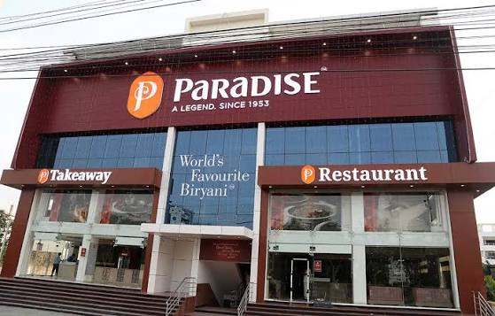
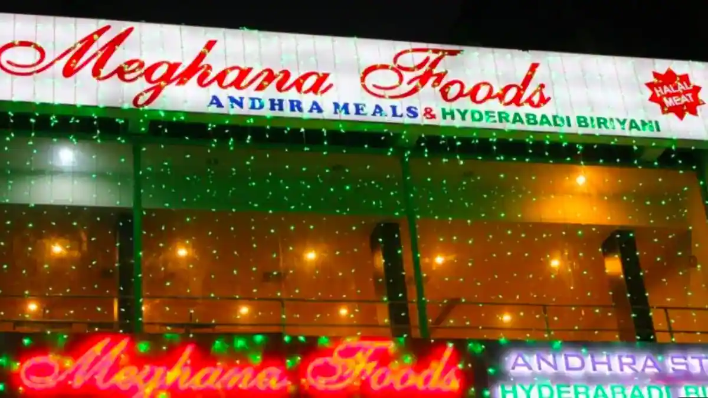
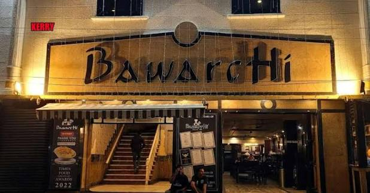
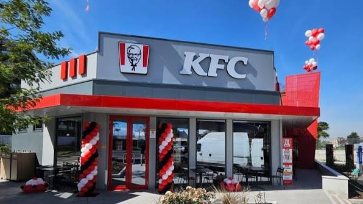
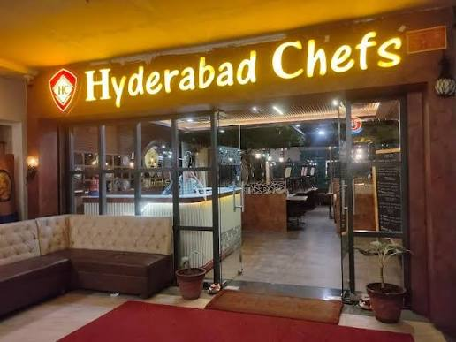
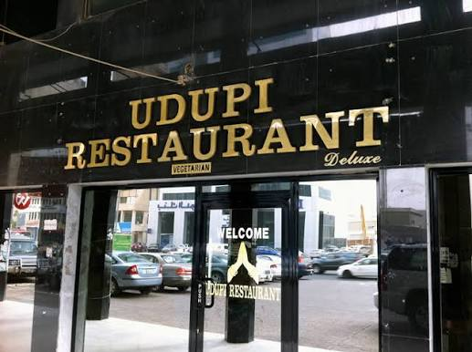
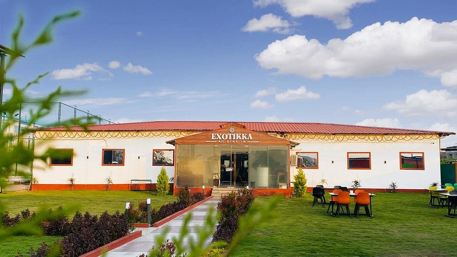
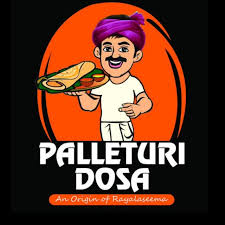

Stop 2 of 3
Each stop on the route plates up its own mix of four cuisines
Pick a kitchen from the route page to browse what it serves.

South Indian
Dosas, idlis and sambar - light, tangy, comforting.
North Indian
Rich curries, tandoor breads and creamy dals.
Hyderabadi
Slow-cooked biryanis and Nizami classics.
Continental
Grills, pastas and hearty kitchen classics.

Chinese
Wok-tossed noodles, fried rice and Manchurian.

Italian
Wood-fired pizzas, pastas and Italian desserts.

Mexican
Tacos, nachos and bold Tex-Mex flavours.
Seafood
Fresh catch, grilled prawns and coastal curries.



